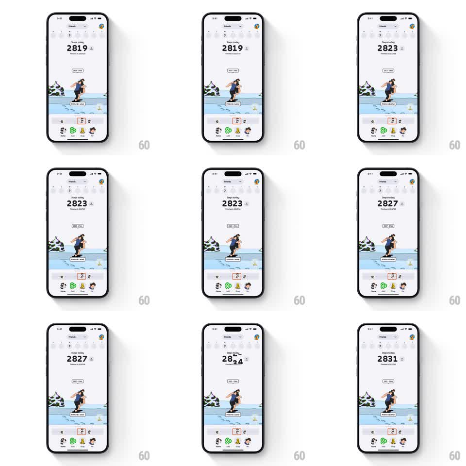

Media
Frame-by-frame

Rebuild this animation 1:1: Stompers' live step counter - the big "Steps today" number updates in real time, each changed digit rolling vertically like a flip-clock cell.

Rebuild this animation 1:1: Stompers' live step counter - the big "Steps today" number updates in real time, each changed digit rolling vertically like a flip-clock cell. ## Integration Integration: stack-agnostic spec - springs given as stiffness/damping, timed motions as duration + curve; map every value to your framework and animation library of choice. ## Scene Snowy game home: Friends header, "Steps today" label, a large counter (2819, climbing), the character stage below with the avatar walking a winter path, and a friends rail at the bottom. ## Motion spec Pattern: rolling-digit live counter, event-driven. - As steps accrue, the counter updates: each digit whose value changes rolls upward out of its cell while the new digit rolls in from below (~300ms, ease-out), odometer-style. - Lower digits roll frequently, tens cascade on carry; unchanged digits stay perfectly still. - The roll is clipped to each digit cell; the number is monospaced so the layout never shifts. - The character below walks a looping path continuously, independent of the counter's rhythm. ## Calibration - Rolls are quick and snappy (under 350ms); a slow flip reads as lag behind the real step count. - Bursts of steps queue into one smooth roll per digit, never a stutter of micro-rolls. ## Reduced motion Digits crossfade on change (150ms). ## Don't miss - The comma/label spacing never moves - only the digit glyphs travel. - The roll direction is always up (increasing); a mixed direction reads as a slot machine.